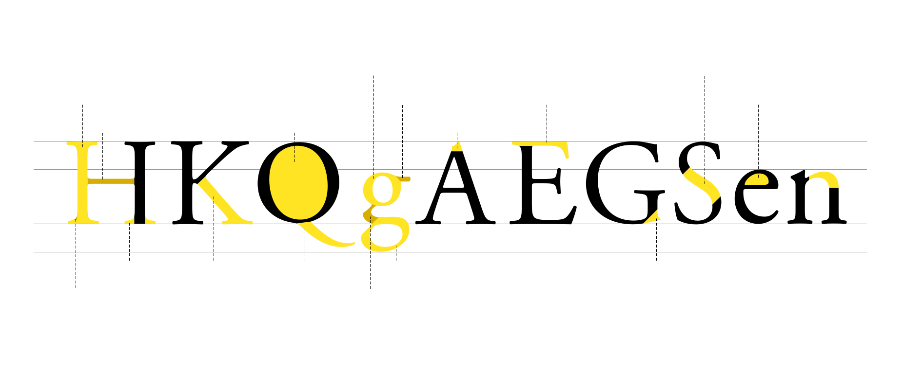

스템 stem, 줄기
글자의 세로획.
크로스바 crossbar
A나 H와 같이 양쪽을 이어주거나
f나 t와 같이 수직획을 위와 아래로
나누는 선.
카운터 counter, 속공간
글자에서 획으로 둘러싸인 빈 공간.
볼 bowl
소문자 윗부분으로, 공간을 감싼 획.
이어 ear, 귀
소문자g 오른쪽 상단에 돌출된 획.
에이펙스 apex, 꼭지
대문자 A 등에 있는 뾰족한 정점.
암 arm, 팔
T 나 E처럼 한쪽이나 양쪽으로 뻗은
수평획.
스파인 spine, 등뼈
S에서 위와 아래를 연결하는 획.
아이 eye, 눈
소문자 e의 폐쇄된 공간.
숄더 shoulder, 어깨
소문자 n에서와 같이 굵은 수직획과
가는 수평획을 연결하는 둥근 획.
필레 fillet, 구석살
스템과 세리프가 연결된 부분을
자연스럽게 보충하기 위한 살.
세리프 serif
주요 획의 끝 부에 돌출한 작은 획.
레그 leg, 다리
K 또는 k에서 밑으로 뻗은 대각선 획.
테일 tail, 꼬리
j처럼 밑으로 흘려진 대각선 획.
링크 link, 고리
소문자 g ‘볼’과 ‘루프’를 연결하는 부분.
루프 loop
소문자 g 밑부분으로, 공간을 등글게 감싼 획.
스퍼 spur, 발톱
G에서 둥글게 감싼 아래획과 수직획이 연결되며 생기는 작은 돌출 부분.